- 6Control strategies simulated on one two-link arm
- 5 N·mConstant disturbance per joint, rejected to zero error
- ±15 N·mActuator limit handled with integrator anti-windup
- 20%Mass error (0.8 vs 1 kg) tolerated by sliding-mode control
Overview
This was the course project for graduate Robotics (EE 5325). We modeled a two-link planar elbow arm, simulated it with no controller, then designed six closed-loop controllers in sequence. Each one was built to fix the specific weakness the previous one exposed: bounded tracking error, a constant disturbance, unrealistic torque, actuator saturation, and finally not knowing the arm's masses.
Every controller tracked the same reference, qd1 = 0.1 sin(2πt) and qd2 = 0.1 cos(2πt), starting well away from it (both joints at π/3 rad), and was simulated for 10 s in MATLAB with ode23.
Modeling the arm
Both link masses are treated as point masses at the ends of the links (m1 = m2 = 1 kg, a1 = a2 = 1 m, g = 9.8 m/s²). We derived the equations of motion from the Lagrangian (kinetic minus potential energy), which gives the standard manipulator form:
M(q) q̈ + N(q, q̇) = τ
- Inertia matrix M(q). M11 = (m1+m2)a1² + m2a2² + 2m2a1a2cos θ2, M12 = M21 = m2a2² + m2a1a2cos θ2, M22 = m2a2². It changes with the elbow angle, so the arm is harder to swing when it is stretched out.
- Nonlinear terms N(q, q̇). Coriolis and centrifugal coupling between the joints, plus gravity on each link.
- State-space form. With x = [θ1 θ2 θ̇1 θ̇2]T, the simulation solves q̈ = M(q)−1(τ − N) at every step. The PID designs add the integral of the error as two more states.
Open loop: why feedback is needed
Driving the joints with a fixed τ1 = sin(2πt), τ2 = cos(2πt) from rest for 20 s shows how the arm behaves on its own. Gravity and the coupling between the links take over. The motion is erratic, and around 11 s the second link swings all the way over the top. Nothing in the input reacts to where the arm actually is.

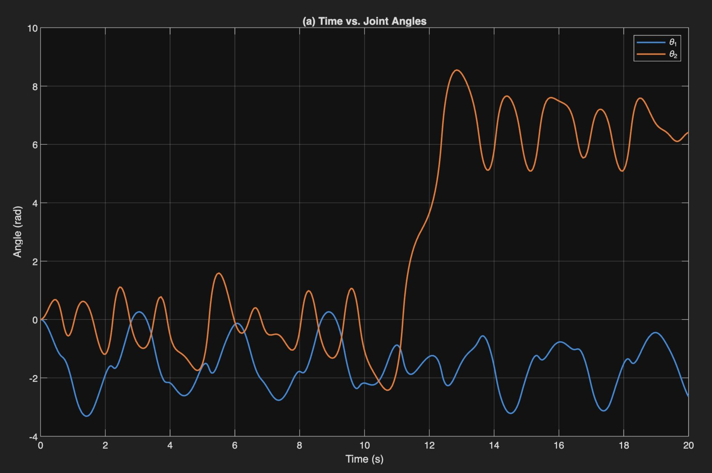

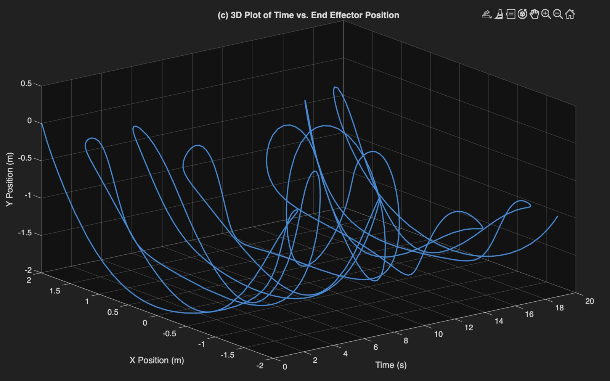
The controller progression
| Controller | Problem it addresses | Control law · gains | Result |
|---|---|---|---|
| PD-gravity | Track the reference | τ = Kpe + Kvė + G(q) Kp = 2500, Kv = 100 | Bounded |
| PID-gravity | PD leaves a small offset | Adds Ki∫e Ki = 1500 | Mean ≈ 0 |
| PID computed torque | 5 N·m disturbance on each joint | τ = M(q)(q̈d + Kvė + Kpe + Kiε) + N Ki = 500 | Error → 0 |
| Computed torque + anti-windup | Torque limited to ±15 N·m | ε̇ = e + Kt(u − v) Kp = (60, 100), Kv = (12, 20), Ki = (5, 30), Kt = (50, 20) | Offset |
| Robust sliding mode | Masses unknown (controller assumes 0.8 kg, true 1 kg) | τ = M̂q̈r + V̂mq̇r + Ĝ + K sgn(s) Λ = 5, K = 12 | Error → 0 |
PD-gravity and PID-gravity
PD-gravity control cancels gravity and uses stiff proportional and derivative gains to pull the arm onto the reference. Within about half a second it was tracking the sinusoid, but the error never fully settled: it kept oscillating with a small negative mean (−0.0117 rad on joint 1, −0.0039 rad on joint 2). Adding an integral term shifted that mean to essentially zero (+0.0005 and +0.0006 rad), but the oscillating part of the error stayed, because neither controller accounts for the arm's inertia or the coupling between the links.

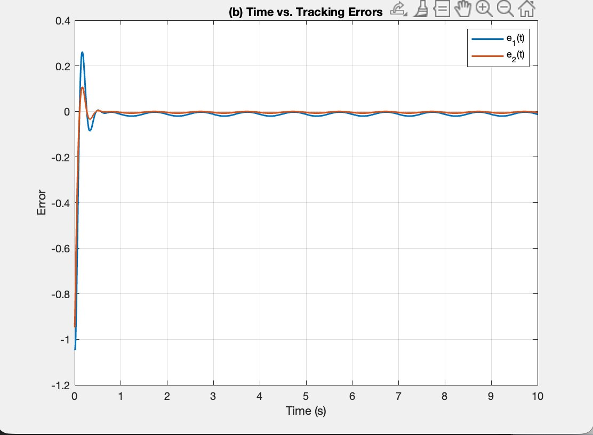

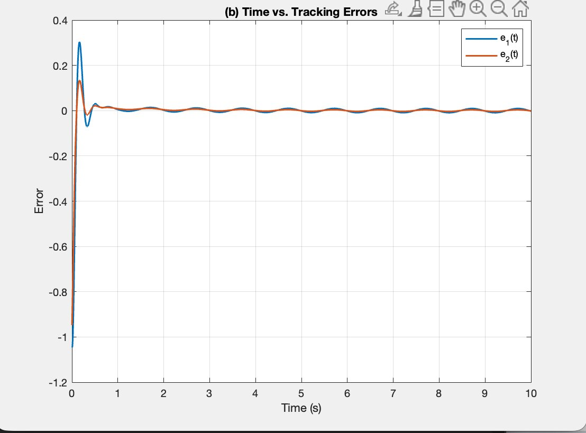
PID computed torque: rejecting a disturbance
Next we added a constant 5 N·m disturbance torque to each joint and asked for tracking error that actually converges to zero. Computed-torque control uses the full dynamic model, M(q) and N(q, q̇), to cancel the arm's nonlinear dynamics. What is left is a linear error equation that the PID gains can shape directly, and the integral term absorbs the constant disturbance. Both errors went to zero and stayed there.
The catch showed up in the torque plot. Because the arm starts about a radian off the reference and the gains are large, the controller asks for well over 10,000 N·m in the first instant. Even plain PD-gravity briefly requests about 2,600 N·m. No real motor on a 1 kg arm can deliver that, which set up the next problem.

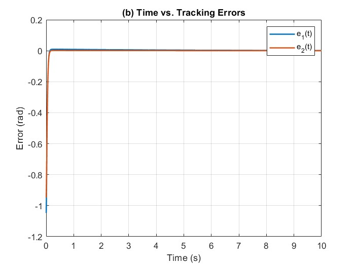

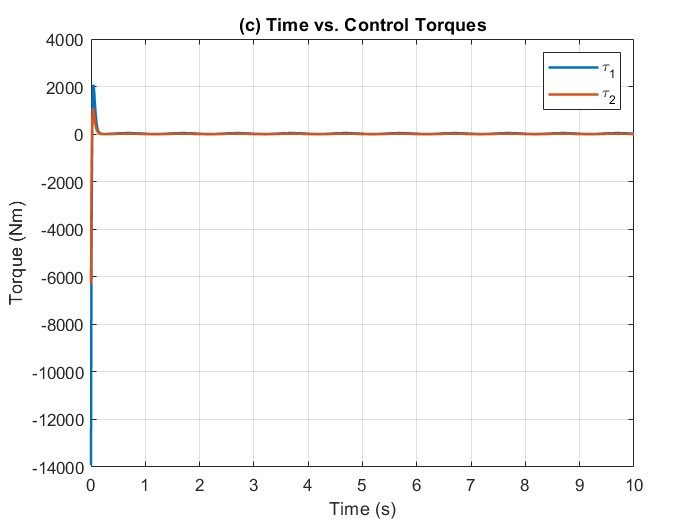
Actuator limits and anti-windup
We capped each joint at ±15 N·m and started the arm from rest at zero angle with initial joint speeds of 1 and 2 rad/s. Clipping the torque creates a new failure mode, integrator windup. While the actuator is saturated, the error keeps accumulating in the integral term even though the motor can't act on it, and when the arm finally comes out of saturation that stored error causes a large overshoot or instability. We used back-calculation anti-windup: whenever the applied torque u differs from the requested torque v, the integrator is pulled back in proportion to the difference, ε̇ = e + Kt(u − v). We also retuned the gains much lower so the controller asks for torques the actuators can supply.
The result stayed stable and bounded. Joint 2 tracks well, but joint 1 settles about 1.5 rad off the reference. Joint 1 has to hold up both links against gravity, and 15 N·m simply isn't enough control authority to do that and follow the trajectory at the same time. The torque plot shows joint 1 hitting the limit on every cycle. Widening the limits (we also ran it at roughly ±60 N·m) brings tracking back, which confirms the remaining error comes from the actuator, not the controller structure.

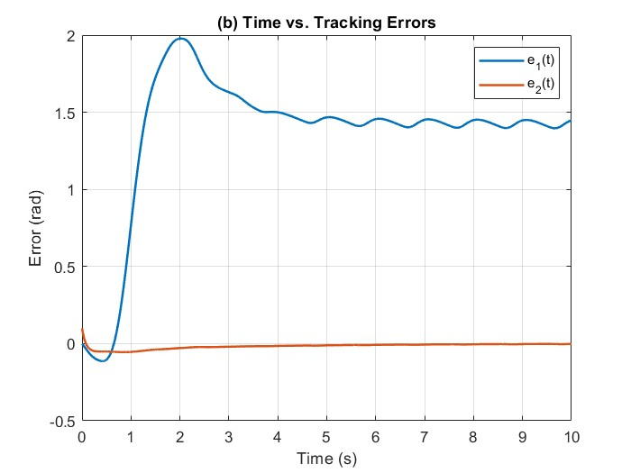

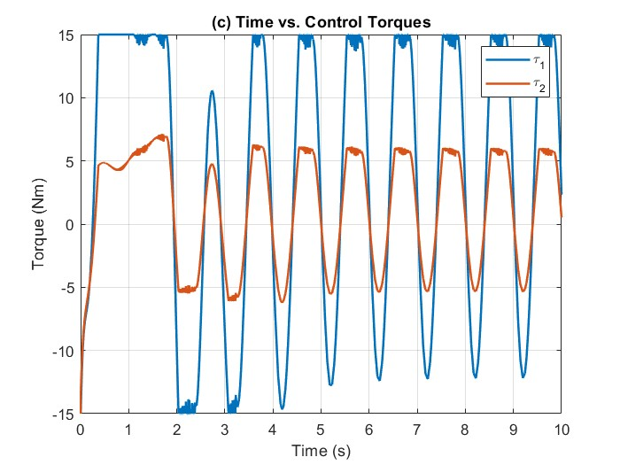
Robust sliding-mode control
Computed torque only works if the model is right. For the last design, the controller was told both masses were 0.8 kg while the simulated arm used the true 1 kg, a 20% error. We designed a sliding-mode controller around three pieces:
- Sliding surface, s = ė + Λe. When s = 0, the error decays exponentially at a rate set by Λ, so the whole design reduces to driving s to zero.
- Virtual reference, q̇r = q̇d + Λe and q̈r = q̈d + Λė, which folds the error correction into the trajectory the model term follows.
- Torque law, shown below. The model-based terms use the estimated masses to do most of the work. The switching term K sgn(s) pushes back hard toward the surface to cover whatever the model gets wrong.
τ = M̂(q)q̈r + V̂m(q, q̇)q̇r + Ĝ(q) + K sgn(s)
Despite the mass mismatch, both tracking errors converged to zero within about 2.5 s, and peak torque stayed around 60 N·m instead of thousands. The trade-off is chattering: the sgn(s) term flips sign every time s crosses zero, so the torque switches rapidly back and forth (the solid bands in the torque plot). On real hardware that would wear the actuators, and the usual fix is to replace sgn(s) with a smooth saturation inside a thin boundary layer.

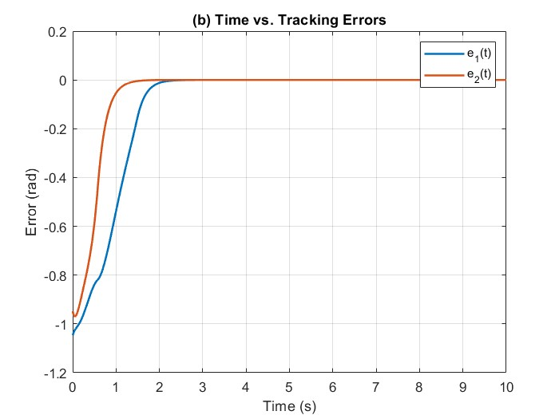

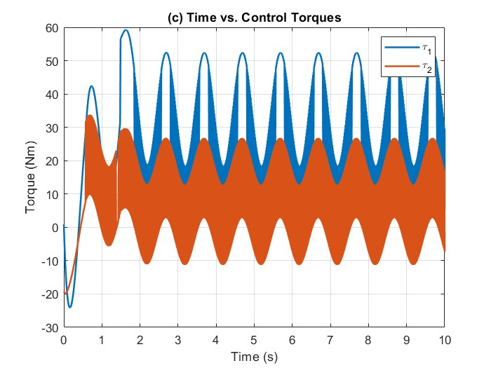

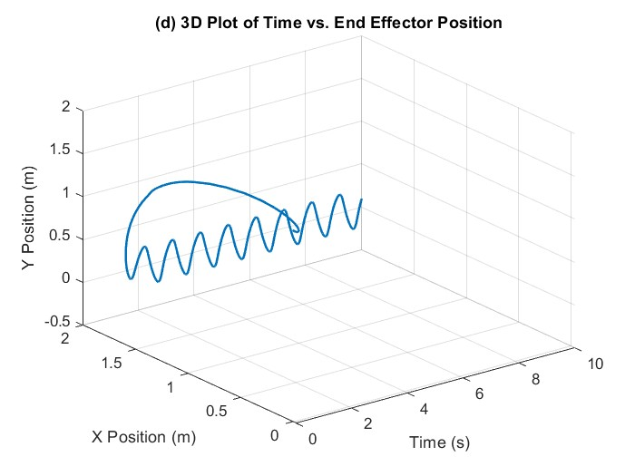
What I learned
Each controller solved one problem and exposed the next. Good-looking error plots can hide torque demands no motor could meet, so the error and torque plots always have to be read together. Model-based control is powerful when the model is right, and robust control is how you keep that performance when it isn't, at the cost of a rougher control signal. Natural next steps are an adaptive controller that learns the unknown masses online, and a boundary-layer version of the sliding-mode law to remove the chattering.